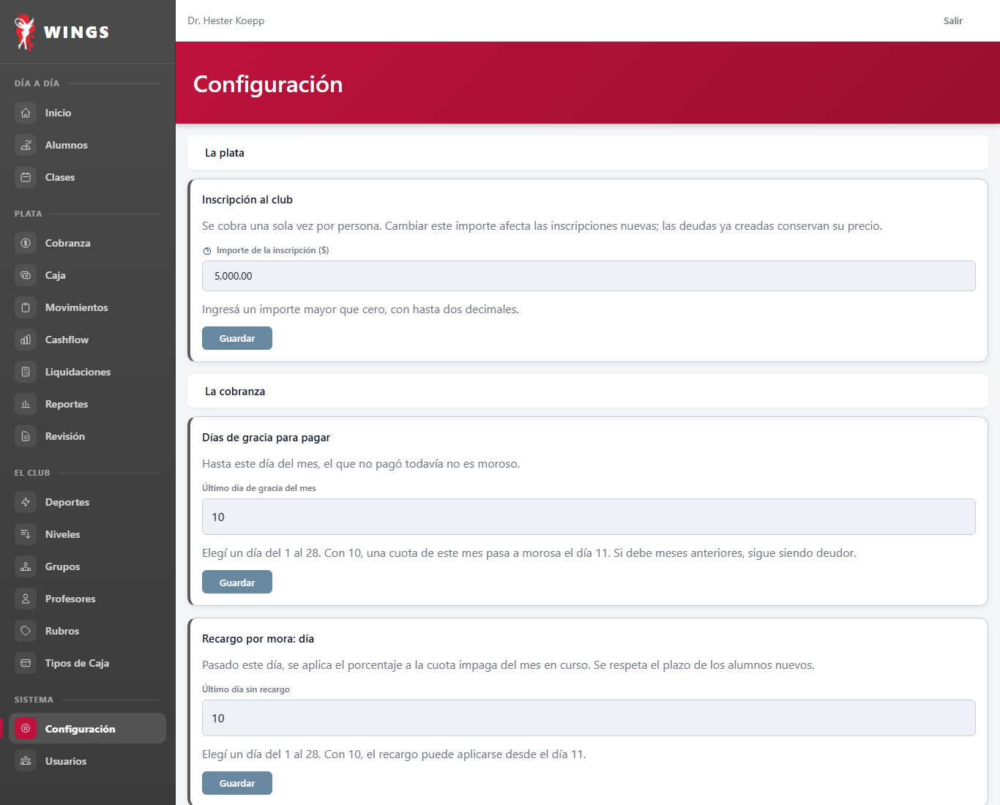
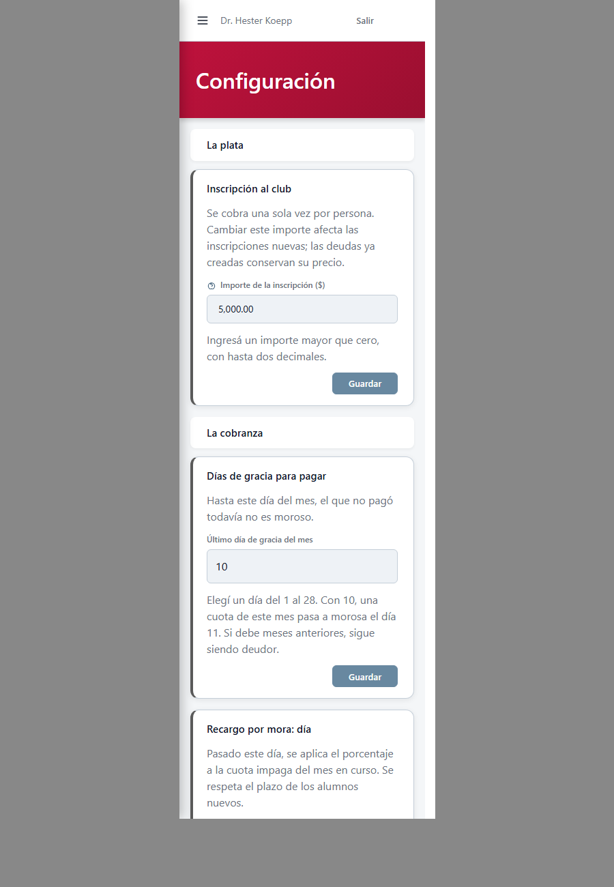

T64: Reglas de primer pago sin superposiciones ni días sin cubrir Implementado por Gemini
Decisión de Carlos: DU-45 («Impedir reglas superpuestas y días sin cubrir»). Caso: CFG-004.
Integridad del sistema visual:
El editor de reglas utiliza los componentes canónicos de Wings, sin tocar Blade ni CSS.
No se modificó ninguna vista Blade bajo resources/views/** ni hojas de estilo bajo resources/css/** (cumple AGENTS.md §1). La edición atómica de tramos se resuelve recopilando y enviando el conjunto en lote desde resources/js/configuraciones.js hacia PUT /configuraciones/primer-pago, validado por App\Support\ReglasPrimerPagoValidator en una transacción única. Sin JavaScript incrustado en vistas (cumple AGENTS.md §5-bis).
1. Listado de Reglas de Primer Pago (Configuración canónica 1..10, 11..20, 21..31)
Cada tramo cubre exactamente sus días del mes sin solapamientos ni huecos, sumando en conjunto la totalidad del 1 al 31.


2. Editor Inline de Regla (Ajuste de días y porcentaje)
Al pulsar «Editar», se despliega el panel de edición inline permitiendo ajustar nombre, porcentaje, día desde y día hasta.


3. Validación de Integridad (Aviso en castellano ante huecos o superposiciones)
Si se intenta dejar un hueco (por ejemplo achicar el primer tramo a 1–10 sin haber extendido el segundo que empezaba en 16), el servidor rechaza con 422 y se exhibe en el panel y en el resumen: «Los días 11 a 15 quedan sin cubrir. Todos los días del 1 al 31 deben estar cubiertos por una regla.»


4. Resumen de Puntos Técnicos Implementados
- Validador central de conjunto:
App\Support\ReglasPrimerPagoValidatoranaliza ordenadamente las reglas comprobando inicio en día 1, continuidad exacta día a día (sin superposiciones ni huecos) y cierre exacto en día 31. - Guardado atómico en lote:
ReglaPrimerPagoWebController::guardarTodas(rutaPUT /configuraciones/primer-pago) actualiza las reglas existentes conservando sus IDs originales (integridad foránea con pagos), crea nuevas y descarta removidas dentro de una transacción única de base de datos. Si el conjunto es inválido, ningún cambio se persiste. - Operaciones individuales protegidas:
store,updateydestroysimulan el conjunto resultante contra la base de datos y rechazan cualquier acción que genere huecos o superposiciones. - Editor en cliente:
resources/js/configuraciones.jsrecopila el estado de todas las tarjetas y envía el conjunto atómico, reflejando errores específicos por campo o generales de conjunto. Reconstruye el listado tras guardado exitoso con Vite. - Pruebas automatizadas: 8 pruebas completas en
tests/Feature/ReglaPrimerPagoSinHuecosT64Test.phpy 5 pruebas entests/Feature/ReglaPrimerPagoSinSuperposicionTest.php, todas en verde (100%).